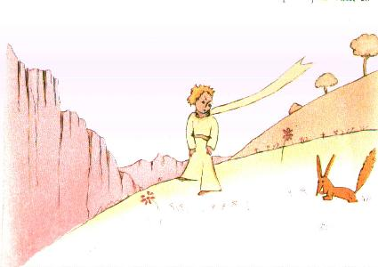
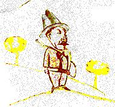
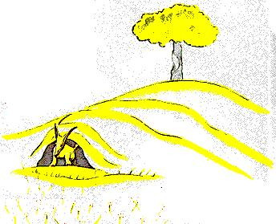

Fue entonces que apareció el zorro:
- Buen día - dijo el zorro.
- Buen día – respondió cortésmente el principito, que se dio vuelta pero no vio a nadie.
- Estoy aquí – dijo la voz –, bajo el manzano... 
- Quién eres ? – dijo el principito. – Eres muy bonito...
- Soy un zorro – dijo el zorro.
- Ven a jugar conmigo – le propuso el principito. – Estoy tan triste...
- No puedo jugar contigo – dijo el zorro. – No estoy domesticado.
- Ah! perdón – dijo el principito.
Pero, después de reflexionar, agregó:
- Qué significa "domesticar" ?
- No eres de aquí – dijo el zorro –, qué buscas ?
- Busco a los hombres – dijo el principito. – Qué significa "domesticar" ?
- Los hombres – dijo el zorro – tienen fusiles y cazan. Es bien molesto ! También crían gallinas. Es su único interés. Buscas gallinas ?
- No – dijo el principito. – Busco amigos. Qué significa "domesticar" ?
- Es algo demasiado olvidado – dijo el zorro. – Significa "crear lazos..."
- Crear lazos ?
- Claro – dijo el zorro. – Todavía no eres para mí más que un niño parecido a otros cien mil niños. Y no te necesito. Y tú tampoco me necesitas. No soy para ti más que un zorro parecido a otros cien mil zorros. Pero, si me domesticas, tendremos necesidad uno del otro. Tú serás para mí único en el mundo. Yo seré para ti único en el mundo...
- Comienzo a entender - dijo el principito. – Hay una flor... creo que me ha domesticado...
- Es posible – dijo el zorro. – En la Tierra se ven todo tipo de cosas... 
- Oh! no es en la Tierra – dijo el principito.
El zorro pareció muy intrigado:
- En otro planeta ?
- Sí.
- Hay cazadores en aquel planeta ?
- No.
- Eso es interesante ! Y gallinas ?
- No.
- Nada es perfecto – suspiró el zorro.
Pero el zorro volvió a su idea:
- Mi vida es monótona. Yo cazo gallinas, los hombres me cazan. Todas las gallinas se parecen, y todos los hombres se parecen. Me aburro, pues, un poco. Pero, si me domesticas, mi vida resultará como iluminada. Conoceré un ruido de pasos que será diferente de todos los demás. Los otros pasos me hacen volver bajo tierra. Los tuyos me llamarán fuera de la madriguera, como una música. Y además, mira ! Ves, allá lejos, los campos de trigo ? Yo no como pan. El trigo para mí es inútil. Los campos de trigo no me recuerdan nada. Y eso es triste ! Pero tú tienes cabellos color de oro. Entonces será maravilloso cuando me hayas domesticado ! El trigo, que es dorado, me hará recordarte. Y me agradará el ruido del viento en el trigo...
El zorro se calló y miró largamente al principito:
- Por favor... domestícame ! – dijo.
- Me parece bien – respondió el principito -, pero no tengo mucho tiempo. Tengo que encontrar amigos y conocer muchas cosas.
- Sólo se conoce lo que uno domestica – dijo el zorro. – Los hombres ya no tienen más tiempo de conocer nada. Compran cosas ya hechas a los comerciantes. Pero como no existen comerciantes de amigos, los hombres no tienen más amigos. Si quieres un amigo, domestícame !
- Qué hay que hacer ? – dijo el principito. 
- Hay que ser muy paciente – respondió el zorro. – Te sentarás al principio más bien lejos de mí, así, en la hierba. Yo te miraré de reojo y no dirás nada. El lenguaje es fuente de malentendidos. Pero cada día podrás sentarte un poco más cerca...
Al día siguiente el principito regresó.
- Hubiese sido mejor regresar a la misma hora – dijo el zorro. – Si vienes, por ejemplo, a las cuatro de la tarde, ya desde las tres comenzaré a estar feliz. Cuanto más avance la hora, más feliz me sentiré. Al llegar las cuatro, me agitaré y me inquietaré; descubriré el precio de la felicidad ! Pero si vienes en cualquier momento, nunca sabré a qué hora preparar mi corazón... Es bueno que haya ritos.
- Qué es un rito ? – dijo el principito.
- Es algo también demasiado olvidado – dijo el zorro. – Es lo que hace que un día sea diferente de los otros días, una hora de las otras horas. Mis cazadores, por ejemplo, tienen un rito. El jueves bailan con las jóvenes del pueblo. Entonces el jueves es un día maravilloso ! Me voy a pasear hasta la viña. Si los cazadores bailaran en cualquier momento, todos los días se parecerían y yo no tendría vacaciones.
Así el principito domesticó al zorro. Y cuando se aproximó la hora de la partida:
- Ah! - dijo el zorro... - Voy a llorar.
- Es tu culpa – dijo el principito -, yo no te deseaba ningún mal pero tú quisiste que te domesticara.
- Claro – dijo el zorro.
- Pero vas a llorar ! – dijo el principito.
- Claro – dijo el zorro.
- Entonces no ganas nada !
- Sí gano –dijo el zorro – a causa del color del trigo.
Luego agregó:
- Ve y visita nuevamente a las rosas. Comprenderás que la tuya es única en el mundo. Y cuando regreses a decirme adiós, te regalaré un secreto.
El principito fue a ver nuevamente a las rosas:
- Ustedes no son de ningún modo parecidas a mi rosa, ustedes no son nada aún – les dijo. – Nadie las ha domesticado y ustedes no han domesticado a nadie. Ustedes son como era mi zorro. No era más que un zorro parecido a cien mil otros. Pero me hice amigo de él, y ahora es único en el mundo.
Y las rosas estaban muy incómodas.
- Ustedes son bellas, pero están vacías – agregó. – No se puede morir por ustedes. Seguramente, cualquiera que pase creería que mi rosa se les parece. Pero ella sola es más importante que todas ustedes, puesto que es ella a quien he regado. Puesto que es ella a quien abrigué bajo el globo. Puesto que es ella a quien protegí con la pantalla. Puesto que es ella la rosa cuyas orugas maté (salvo las dos o tres para las mariposas). Puesto que es ella a quien escuché quejarse, o alabarse, o incluso a veces callarse. Puesto que es mi rosa.
Y volvió con el zorro:
- Adiós – dijo...
- Adiós – dijo el zorro. – Aquí está mi secreto. Es muy simple: sólo se ve bien con el corazón. Lo esencial es invisible a los ojos.
- Lo esencial es invisible a los ojos – repitió el principito a fin de recordarlo.
- Es el tiempo que has perdido en tu rosa lo que hace a tu rosa tan importante.
- Es el tiempo que he perdido en mi rosa... – dijo el principito a fin de recordarlo.
- Los hombres han olvidado esta verdad – dijo el zorro. – Pero tú no debes olvidarla. Eres responsable para siempre de lo que has domesticado. Eres responsable de tu rosa...
- Soy responsable de mi rosa... - repitió el principito a fin de recordarlo.
| Chapitre XX | |
Capítulo XX |
| Chapitre XXI | Índice | |
| Chapitre XXII | Capítulo XXII |